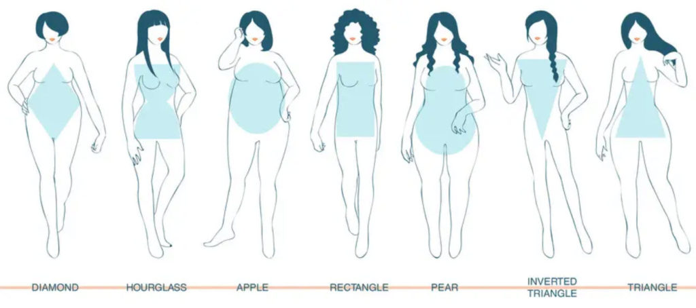

This is a MAJestic post. In this article I look at some of the aspects of operations and how it impacted my life within the MWI.
This article opens up an entire “can of worms”.
You see, nothing is like Hollywood movies. It’s not some lone brave hero with no background, relationships, or friendships. We all have relationships, families, friends, pleasures, pastimes and interests.
And when you join any program (not just MAJestic) that just doesn’t disappear.
You remain who you are. Your interests stay the same. Your family stays the same, and your relationships stay the same.
This is true regardless to what happens to you on a personal level. You just don’t chuck it all away when you “sign on the dotted line”, enter into a facility, or start interacting with other people, species or events.
This is very true.
And for me (for instance), I would be involved in some calibration training exercises with a <redacted> discussing and going through a <redacted> procedure, yet at the end of the day, I would go home. I would fill my motorcycle with gas, pick up some Betamax tapes to watch, and grab a bucket of KFC chicken and a 30-pack of Budweiser beer.
Your life doesn’t change. You just add experiences, events and knowledge to what you already possess.
Relationships are more than what you think
Everyone realizes what “love” is, and the bond that two people have when they are together and when they get married. It’s a bond; an understanding, a shared behavior, and a degree of comfort.
But what people do not realize is that on the quantum level this bond is a very important two-way communication stream. It’s a very strong and powerful communication channel.
Yes, it is complex, and yes it is interesting. And Yes, I am going to get really “deep” into this subject on two particular levels.
- Level one is the idea about “quantum shadows” being your loved ones and family members.
And …
- Level Two is the idea of what it was like for me to go through all these “slides” and “anchoring” events as part of MAJestic. All the while still maintaining a quantum level bond and connection with my spouse and my family.
Level One – Anchoring activity for MAJ while conducting “slides”
As I have explained elsewhere, every moment that your consciousness occupies a world-line, it is (for the most part) alone. All those “other” people are just empty shells and they really don’t have the same kind of consciousness density as you have.
It’s easy to misunderstand this. It’s easy to believe that we occupy a singular lonely world. But that’s not really the case.
And, yes, I have used this simplification in my early posts when introducing this concept.
It’s just a simplification for our minds to understand a very complex reality. Which is that consciousness is not a point, a blob, or a ghostly vaporous something. It is a shared construction, established by your soul, that operates on a multitude of world-lines simultaneously.
And when you are upon any given specific world-line, what that means is that your consciousness density for YOU at that point in time is the dominant density within that particular world-line. All the other consciousness’s within that world-line have a much lighter and trivial density.
It’s not exactly zero.
But it’s not as dominant as yours is.
Now that you understand this point then you can understand how the family bonding occurs. Your particular consciousness bonds, or sets up a quantum line of communication, with other consciousness’s within that particular world-line. The density does not matter.
All that matters is that one consciousness is connected to another.
So…
When I am going through rapid world-line cycling and slides, my wife and my pets seemingly go through it with me. I am with my wife, and my cat is on a chair. A slide occurs and suddenly I am wearing white socks with these big black dots on them (do not laugh, it actually occurred). My wife is still there, except that she has much longer hair, and my cat looks up at me inquiringly. (as if to say, “what?”)
But they actually don’t travel with me. They appear to. But their thoughts and memories are unaware of the transposition of realities.
Are you confused?
It looks that way because when I arrive at the new world-line their quantum shadows are there. They seem, they appear, to go with me.
And since each quantum shadow has a trivial level of consciousness, the bonding methodology remains intact. You still love your spouse, and your pets no matter how strange the rest of the world-line appears to you.
So you can go through a “slide” and you can be in a really deep dive.
The world around you can be very unusual. Like having green(!) chili sauce for your hotdog (also really happened. But at least on this world-line ketchup is the normal red color that we have grown to love), with odd colored deep fried yams instead of French Fries.
And with this would be comparable changes to the physical appearance (and memories) of your spouse.
In my case, she might be shorter, or taller. She might have different colored hair, or eyes, and a different figure entirely. But she was still my spouse. I was always able to recognize her as that. No matter how strange she appeared to me.

I attribute that to the conscious bonding mechanism of quantum entanglement between closely associated consciousness’s.
And the same is true with my pets as well. Though, seriously, I swear that my cats knew what was going on all the time with me. They would sort of look at me with this expression “What? Again!”
And you all know that things can really change.
Cars can change, houses can change, entire landscapes can change, and along with all of that are entire histories and the past. Not only of the body that your consciousness occupies, but also of the entire world-line.
And yes, mental processes as well.
You spouse might be a crack genius one moment, and then a slide will turn her into a simpleton, with no education or understandings.
One minute you are on a world-line where Gerald Ford is President, and the next moment your world-line has Ross Perot as President. And yes, it did happen, and sometimes it can be extraordinarily confusing. Not to mention extremely frustrating.
On a personal note that I can tell you that while my wife would change from slide to slide, it was never far too radical. Or in other words, she didn’t go from a “Whoopi Goldberg” to a Alessandra Ambrosio during a slide.
I was always able to recognize her.
But that being said, that actually could have happened. She could have looked like Whoopi and then ended up looking like Alessandra. She could have. It’s just that in my experience, she didn’t.
That doesn’t mean that she didn’t have cosmetic surface differences. Sometimes her skin color was different, the hair style and color would be different, and yes, her body would change. Sometimes rather drastically. Yet, though all of this, she “felt” right.
I well remember one time there was a slide and while we were having sex (it happened at all times, I had no control of it) she ended up becoming shorter. Like really shorter. Maybe three inches shorter (9 cm). But her boobs got much bigger, so it was one of those cases of a little of this, and a little of that, you know.
And don’t ask me how I dealt with it.
I am a human, when you start to experience changes, you learn to adapt to them. And so I did. I adapted.
This is true for my cats, and my dogs. They might have physically changed, but I was immediately able to identify who they were. Our internal relationships were not altered by the MWI taskings. Though it could be frustrating. I once was used to having my dog go out for walks with me, and he would keep close by, then there would be a slide, and I would need to take him out of a leash each time, because otherwise he would run away.
So, what I am trying to say is that everything is inner-connected. You don’t go from being a middle-class noob driving an average car, to suddenly living in a high-rise penthouse with a movie-starlet in your bed. All slides happened for reasons, and when I was involved in the slides, the changes were always in equal amounts of good with bad, new changes with old familiars, and situations that resembled where I departed from.
Level Two – The relationships
Now, as I have stated, this bond; this connection between my consciousness and the consciousness’s of my family, loved ones and pets did not change.
It still existed.
And because it did, I was able to identify them and their association with me. This was true no matter how messed up the rest of the world appeared to me, to be.
Yet…
Bonds and quantum level communication is a two-way street. Even though my wife had no idea what was going on, aside from what I told her, she was able to “feel” or sense changes.
In fact, she was an unusually sensitive person. She possessed this nearly 6th or 7th sense that at times amazed me. For instance, she knew that the earthquake in San Francisco was going to occur. She knew what I was doing when I was at the other end of the world on business travel. She even knew if I had indigestion if I was in a hotel room miles away. She knew, in great detail, if I was being a very “bad boy”. And she knew if I was missing her and my little family.
And strangely she could sense when I went to the bathroom, and would always, absolutely always, call me when I left my desk to go to the toilet. (She didn’t realize that this was going on, but it drove me nuts. And in those days, we didn’t have cell phones.)
She was special like that.
Because even though the world-lines changed, and the bonds did not, the bonds themselves were altered by the environmental changes.
And she could sense this.
So she would compensate.
Her brain, affected by what her “quantum shadow” was at the time, would also create changes in the bonding between us individuals. And that slowly drove her crazy.
She started to manifest strange behaviors around 1987.
Was diagnosed with Schizoaffective personality in the early 1990’s, and exhibited full schizophrenia around 1998.
Which is one of the reasons why I was so very upset by the comments by “Osiander” on 30APR21.
"It seems to me to be hearing the thought stream of a schizophrenic person."
A person with this illness is very sick indeed, and their loved ones have a herculean task in dealing with them, on top of everything else.
For me, personally, not only did I need to endure the slides via MAJestic, but I held some very competitive and hard-charging technical positions in the industry. It was awful.
You are making a presentation in a meeting, you are standing in front of the white-board, and the secretary breaks into the room with a phone call. It's the hospital and my wife tried to kill herself, and they needed me to go to the hospital immediately and sign the necessary papers. So I would need to excuse myself from the meeting, and run off to the emergency room at the hospital, and sign the necessary papers to put her under observation and then into the hospital for treatment. Sometimes as short as a few weeks, but towards the end of the 1990's lasting months inside a high-security ward. Not a fun life.
And add that to the fact that the role I had was not changing. I had to deal through all the slides and changes while everyone else just lived their normal day-to-day life. Ugh!
In the world-lines, they (the world-line itself) always seemed to adjust to our situations.
Not the other way around.
And things changed.
The past would change each time we went though a slide.
Not, typically big changes. But all those little details that can add up to a very fundamentally strange life.
When we first met, her family were normal, middle class. Then over the slides and jumps, things started to change. Her family history migrated to lower class. And then her family started to have “a past”, and a history of mental illnesses. Where earlier there wasn’t any.
And indeed she was having a hard go at it. If I was involved in a deep-dive, you can pretty much guarantee that she would suffer the consequence for in on some way, one way or the other.
New subject.
The fantasies
All men have these fantasies of encountered strange, interesting and fun women and having sex with them.
The porn industry isn’t a billion dollar industry for nothing.
And if you fully understand what I am relating you can see that there is this real distinct possibility that this kind of thing can seemingly happen when you are involved in a slide.
But I can tell you that while there is a certain element of that that POSSIBLY could occur, it just never materialized in the way that you would it that it would. At least not in my situation.
My wife was always my wife.
She might look thin and tall, or short and round, but she was always my wife. You immediately recognize her as “the wife”.
Though she might be tall and thin, or short and round. She was always easily identifiable to me as my wife, my spouse and I immediately knew her by close proximity “feeling”, not by visual confirmation.
When the alarm went off in the morning, you woke up with your wife. Regardless of how she looked, the length of her hair, the colors of her eyes, or the way she was built. She was your spouse for good or for bad.
I will admit that there is a certain excitement having sex with a spouse that one day looks like an athletic gymnast, and the next day looks like someone who lounges on the sofa eating bon-bons, and then the day after that was a prissy doll-faced scold. But the bonding of family members goes far deeper than the physical appearance, and that I can tell you (first hand) is really the fundamental case.
In fact, during really crazy times, when the cycling was “off the charts”, all I really wanted to do is sort of get back to the woman who I married, not what ever quantum shadow she was at that particular time.
So much for the fantasy. Eh?
However, for the record, for the vast majority of the time we were married she was always attractive and upscale in that particular area. This was the result of many things that are too involved to get into at this time.
It’s like all those fancy promotions of the life of the “jet set” businessmen. The people that travel three or five times a week, always flying to one city or to the other.
It looks so glamorous and exciting.
But as someone who actually did it, nope, it’s something else altogether different.
Truthfully, it’s a pain in the ass and all you want is a nice home-cooked meal, a rest on your couch, and maybe some time in the backyard with your family. The life of a “road warrior” is not fun.
It sucks.
It’s mostly a world of lonely restaurants, airports, rental cars, and hotel-rooms.
That’s the way life is.
How you picture something is usually not the way it actually is.
So what am I saying?
Look, if you are able to conduct prayer campaigns, you can navigate the MWI successfully and end up with the kind of life that you desire.
And if you have a role, such as I have had, where you have zero navigation control, you can still grasp the reigns of power and steer your life in the direction that you want. You just need to alter the programming. As I did in ADC Pine Bluff.
What ever you do, just remember that we are all connected together.
For you to navigate you must be aware of your interpersonal relationships and then leverage them for mutual satisfaction. NEVER discount the interpersonal relationships that you are involved in. They have a great deal of influence on how your desires and wishes manifest.
In the meantime, as best as you can… just enjoy that life that you are living right now. It’s a blessing that might not come your way again.